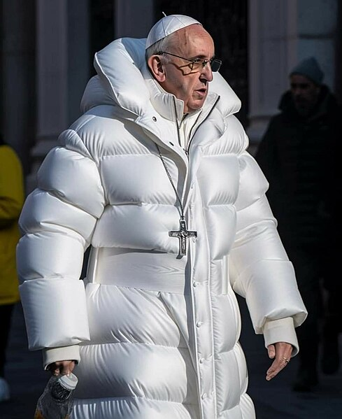
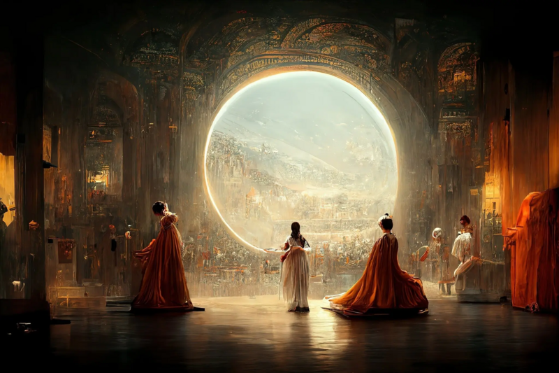

Потрясающие изображения от Midjourney
В современном мире много вещей, которые поражают человеческое воображение. Слышали ли вы что-то о Midjourney? Потрясающая нейронка, способная нарисовать фантастической красоты изображения по вашему текстовому запросу.
Midjourney — искусственный интеллект, создающий изображения по текстовым описаниям. Наряду с конкурентами на рынке генерации изображений, midjourney использует технологии генеративно-состязательных сетей.
В марте 2022 года был запущен Discord-сервер с просьбой размещать высококачественные изображения в Twitter и Reddit для обучения системы. В апреле 2022 года на том же сервере Discord была запущена рабочая версия 2 Midjourney. С 12 июля 2022 года находится в стадии открытого для широкого круга пользователей бета-тестирования.
Пользователи создают изображения, посылая команды боту в мессенджер Discord: вводят словесное описание желаемого изображения; после чего пользователю предлагается выбрать лучшее из четырёх сгенерированных программой изображений и получить изображение в высоком графическом разрешении. Midjourney также предлагает множество других команд для отправки боту Discord. Например, команда /blend позволяет смешать два изображения для генерации нового, /describe записывает четыре варианта подсказок на основе загруженного изображения, а /shorten предлагает сделать длинную подсказку короче.
В марте 2023 года Midjourney закрыла ранее предоставлявшийся бесплатный пробный допуск к программе из-за «чрезвычайного спроса и злоупотреблений пробными версиями». Причиной стало создание большого количества дипфейков с участием знаменитых личностей.
Например, вот ненастоящее изображение папы римского Франциска в пуховике, созданное Midjourney:
«Théâtre d'Opéra Spatial» – изображение Midjourney, занявшее первое место на конкурсе цифрового искусства:
Данный искусственный интеллект помогает рисовать практически что угодно в пару кликов и за несколько секунд. А красота выдаваемых изображений вдохновляет и завораживает.